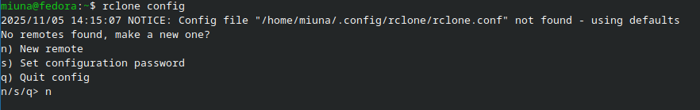

pra vc q nem eu, vc ama o linux, ama o rclone, mas tá cansado de tentar fazer backup no google drive.
sabe como eh, ne? vc tenta subir aquele backup e o upload fica uma tartaruga... ou entao o seu rclone mount faz o dolphin ou o nautilus engasgarem so pra listar os arquivos? e pra piorar, vc descobre q o google tem um limite de operacoes de api q so deixa subir uns 2 ou 3 arquivos por segundo?

eh mto chato! sem falar no limite de upload de 750gb por dia! se vc tem 2tb pra subir, tem q ficar uns 3 dias controlando tudo.
mas... tem um jeito mto mais rapido, sem limite diario e q pode sair de graca pra baixar seus arquivos dnovo! apresentando os nossos herois: backblaze b2 e cloudflare!
Parte 1: O Vilão (Pq o Google Drive odeia o rclone?)
(ele n odeia, ele só n foi feito pra isso!)
o problema eh simples: o google drive foi feito pra humanos (q clicam em 1 arquivo, esperam, dps clicam em outro). ele n foi feito pra máquinas (como o rclone) q pedem 1000 coisas ao msm tempo.
- Limite de Ações: o google fica "bravo" (dá rate limit) e só aceita uns 2 ou 3 arquivos novos por segundo. eh por isso q subir 10 mil arquivos pequenos vai demorar uma eternidade.
- Limite Diário: o teto de 750 GB.
o google drive eh ótimo pra guardar o trabalho da faculdade, mas eh péssimo, terrível, asqueroso pra um backup gigante do rclone.
Parte 2: O Herói (Olá, Backblaze B2!)
o Backblaze B2 (ou só "B2") eh um Object Storage. ele AMA pedidos rápidos! vamos comparar:
| Característica | Google Drive (o Vilão) | Backblaze B2 (o Herói) |
|---|---|---|
| Limite de Ações | 2-3 por segundo | 500 por segundo! |
| Limite Diário | 750 GB | NÃO TEM! |
vc viu isso? 500 AÇÕES POR SEGUNDO! vc pode usar seu rclone copy com --transfers 100 e ele vai voar!
"mas deve ser caro!" não! eh mto barato!
- Pra Guardar: tipo $0.006 por GB. (seus 200 GB iam custar tipo $1.2 por mês!)
- Pra Subir (Upload): de graça!
...só tem um porém...
Parte 3: O "Porém" (O Custo de Baixar)
o b2 (e a aws, e todos os outros) te cobra pra baixar os arquivos. (chama "egress"). eh barato (tipo $0.01 por GB), mas... se vc baixar seus arquivos de novo, precisa pagar.
eh justo.
mas... e se a gente fizesse ser de graça?
Parte 4: O Truque! (B2 + Cloudflare = BFFs!)
aqui tá o melhor segredo da internet! o Backblaze e o Cloudflare são tipo... melhores amigos!
eles têm um acordo oficial (o "Bandwidth Alliance") q diz:
"qualquer transferência de dados entre nós dois eh 100% de graça!"
e o Cloudflare (q eh um serviço de "escudo" pra sites) tbm te dá download ilimitado de graça!
vc entendeu a mágica?
- vc pede seu arquivo pro Cloudflare.
- o Cloudflare busca seu arquivo no Backblaze.
- o Backblaze entrega pro Cloudflare (de graça, pq são bffs).
- o Cloudflare te entrega o arquivo (de graça, pq ele eh legal).
Resultado: Custo de download = $0.00!
veja se a parceria ainda ta ativa antes de implementar: cloudflare.com/partners/technology-partners/backblaze
Parte 5: Guia (Como fazer o truque!)
(vai demorar 10 minutinhos!)
O q vc precisa:
- Conta no Backblaze B2 (os 10 primeiros GB são de graça).
- Conta no Cloudflare.
- Um domínio (a única parte q custa dinheiro, tipo R$ 40 por ano).
Passo 1: No Backblaze B2
- Cria um "Bucket" (uma pasta). dá um nome único pra ele (ex:
meu-backup). - Importante: deixa o bucket Privado!
- Vai em "Application Keys" e cria uma "App Key" nova.
- Dá permissão só pra esse bucket q vc criou.
- GUARDA ESSES 3:
keyIDapplicationKey(só aparece 1 vez!)- O "Friendly URL" do seu bucket (algo tipo
f005.backblazeb2.com).
Passo 2: No Cloudflare
- Adiciona seu domínio no Cloudflare.
- Vai na aba "DNS" → "Records".
- Clica em "Add record" e faz assim:
- Type:
CNAME - Name:
arquivos(oub2,nuvem...) - Target: o Friendly URL do Backblaze! (ex:
f005.backblazeb2.com) - Proxy status: LIGADO! (o ícone da nuvem tem q estar LARANJA!).
- Type:
- Salva!
Passo 3: No seu Linux (o Rclone!)
No seu terminal, digita: rclone config

- Cria um "New remote" (tipo
b2-free). - Escolhe a opção "Backblaze B2".
- Põe o
keyIDe oapplicationKeyq vc guardou. - AQUI ESTÁ O SEGREDO:
- o rclone vai te perguntar pelo endpoint
- NÃO deixe em branco!
- Coloca aqui o domínio q vc acabou de criar no Cloudflare! (ex:
arquivos.cth.jp)
- Termina a configuração (pode dar enter pro resto).
Conclusão
agora, o seu remote b2-free tá pronto!
Quando vc fizer:
rclone copy ~/MinhaPastaGigante b2-free:MinhaPastaGigante --transfers 50 --checkers 100 --progressele vai subir mto rápido! (sem limite de 2/s e sem limite de 750GB!)
rclone mount b2-free:/ ~/Nuvemo rclone vai pedir os arquivos pro Cloudflare... q vai buscar no B2 de graça... e vc vai baixar tudo de graça!
bem-vindo ao jeito certo de usar a nuvem no linux!